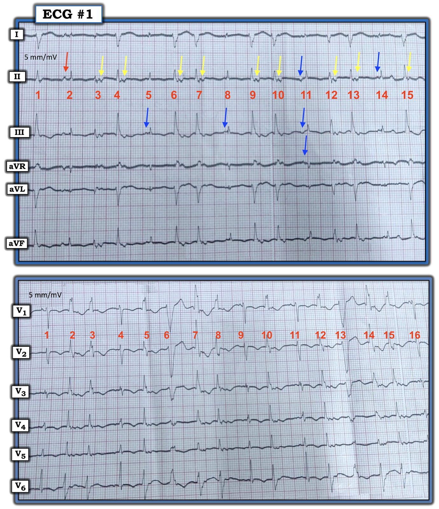
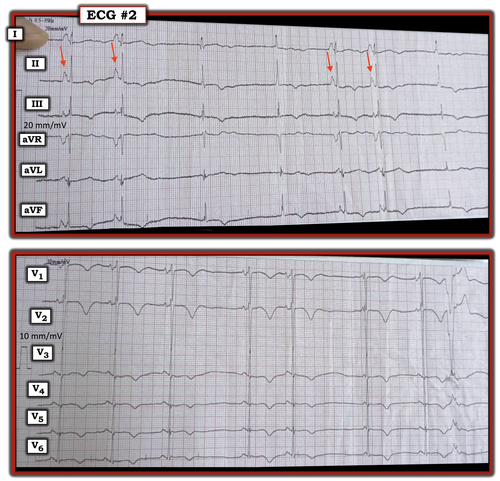
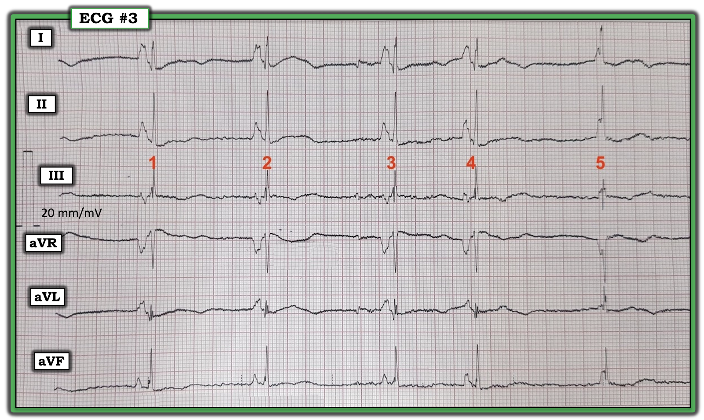
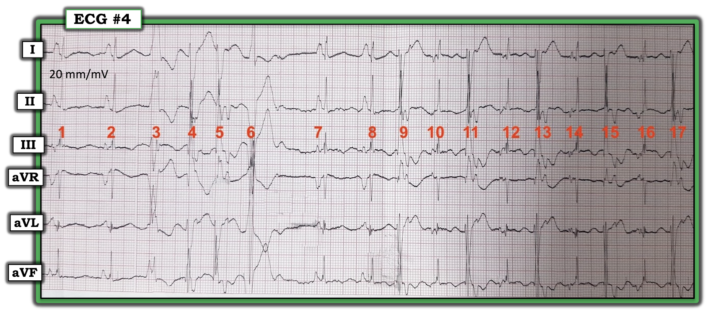
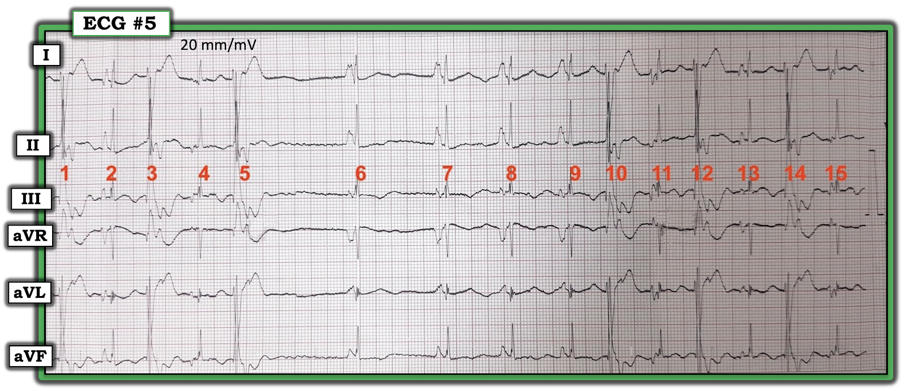
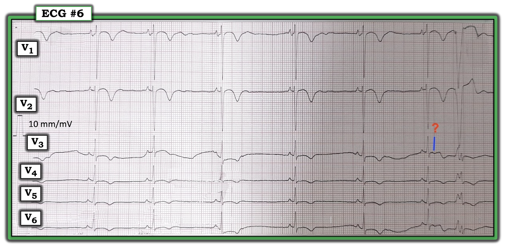

Những nhịp khó ở trẻ 12 tuổi — Báo cáo ca MIS-C
===================================
Nhận định các nhịp trên điện tâm đồ — Báo cáo ca MIS-C (ngày 16 tháng 9 năm 2024):
===================================
Dưới đây là những nhận định đầu tiên của tôi về các nhịp trên điện tâm đồ được gửi cho tôi từ Báo cáo ca bệnh của Dimah Jarmakani và cs. — về một bé trai 12 tuổi mắc MIS-C (hội chứng viêm đa hệ thống ở trẻ em — Multisystem Inflammatory Syndrome in Children).
- Để xem toàn bộ phần bàn luận về ca bệnh — BẤM VÀO ĐÂY —
- (Dimah Aljarmakani và cs. — ACTA Sci Clin Case Reports 6(2):38-42, 2025).
- Đường dẫn dễ nhớ tới trang này = tinyurl.com/KG-Blog-MIS-C —

TỔNG QUAN CA BỆNH (do BS. Jarmakani trình bày):
Một bé trai 12 tuổi nhập viện chúng tôi vì rối loạn chức năng cơ tim nặng và nhịp hỗn loạn với các rối loạn nhịp nhanh và nhịp chậm. Sau đây là các bản ghi điện tâm đồ của bệnh nhân:
- Điện tâm đồ #1 và #2 lần lượt được ghi vào ngày nằm viện thứ 2 và thứ 4 — khi bệnh nhân đang bị rối loạn chức năng cơ tim nặng.
- Điện tâm đồ #3,4,5,6 được ghi một tuần sau đó — khi bệnh nhân bắt đầu đáp ứng với điều trị nội khoa, chức năng cơ tim hồi phục.
Chúng tôi đã nhờ BS. Grauer hỗ trợ đọc các bản ghi điện tâm đồ, Đây là phần trả lời của ông:
===========================================
Nhận định của tôi về các bản ghi tiêu biểu của ca này:
===========================================
Điện tâm đồ #1:


SUY NGHĨ CỦA TÔI về điện tâm đồ #1:
Rõ ràng đây là một chuỗi rối loạn nhịp khó — ghi từ bé trai 12 tuổi đang bệnh cấp tính mắc MIS-C này:
- Tôi đã ghép các chuyển đạo chi và chuyển đạo trước tim của bản ghi đầu tiên này lại với nhau (các bản ghi này được ghi nối tiếp nhau). Lưu ý rằng bản ghi này được ghi ở chế độ nửa chuẩn (half-standardization).
- Nhịp thay đổi rất nhiều. Mũi tên ĐỎ trông giống một sóng P xoang đứng trước nhát #2. Thực ra ta không thấy thêm sóng P xoang nào khác trên điện tâm đồ #1 này — nhưng sau khi liếc trước điện tâm đồ #2, rõ ràng có những sóng P trông giống P xoang trong bản ghi kế tiếp này (bên dưới) — nên tôi sẽ giả định rằng mũi tên ĐỎ trước nhát #2 trên điện tâm đồ #1 là một sóng P xoang (hoặc có thể là sóng P từ một ổ nhĩ khác).
- Vì sóng P ở mũi tên ĐỎ này nhọn — tôi nghĩ ta đang thấy hình ảnh ngược lại bên dưới mỗi mũi tên VÀNG! Vì vậy tôi nghi ngờ các mũi tên VÀNG này đánh dấu vị trí dẫn truyền ngược dòng từ các nhát thất.
- Hình dạng QRS của các nhát #3,4; 6,7; 9,10; 12,13 và 15 cho thấy trục lệch phải rõ với dạng rS ở chuyển đạo I — và dạng qR ở chuyển đạo III,aVF.
- Tiếc là — ta không biết chắc nhát nào ở chuyển đạo chi tương ứng với nhát nào ở chuyển đạo trước tim — nhưng tôi đoán rằng các nhát #3,4; 6,7; 9,10; 12,13 và 15 có dẫn truyền kiểu LPHB — tương ứng với các nhát kiểu RBBB ở chuyển đạo V1 trong nhóm chuyển đạo trước tim. Các nhát này rất rộng và không có sóng P đi trước — nên tôi nghĩ tất cả đều là PVC (với rất nhiều cặp đôi thất) — kèm dẫn truyền ngược dòng ở mũi tên VÀNG. Dẫn truyền kiểu RBBB-LPHB gợi ý đây có thể là các nhát phân nhánh xuất phát từ phân nhánh trái trước (dù QRS rộng hơn so với các nhát phân nhánh thường gặp).
- Ở các chuyển đạo trước tim của điện tâm đồ #1 — ta cũng thấy nguồn gốc kiểu LBBB của các nhát #6 và 13 ở chuyển đạo trước tim. Khó nói đây có phải là PVC từ một ổ thất khác hay không (dù việc chúng rất giống dẫn truyền LBBB gợi ý với tôi rằng đó có thể là các nhát trên thất kèm dẫn truyền lệch hướng).
- Tôi nghĩ các mũi tên XANH trên điện tâm đồ #1 biểu thị các nhát được dẫn truyền từ một ổ nhĩ khác (tức là các sóng P này âm hoặc khó thấy ở chuyển đạo II — nhưng thấy rõ hơn ở các chuyển đạo khác).
ĐIỀU CỐT LÕI về điện tâm đồ #1:
- Dù các chi tiết trên thú vị đến đâu — tôi không nghĩ chúng có ý nghĩa về lâm sàng. Nhịp nhìn chung hỗn loạn — điều này không hẳn là bất ngờ với bệnh sử một trẻ 12 tuổi bệnh cấp tính có bệnh cơ tim giãn nặng trên siêu âm tim.
- Tôi đoán nhịp nhìn chung là nhịp xoang, có lẽ kèm ổ tạo nhịp nhĩ lang thang và ngoại tâm thu thất rất thường xuyên với nhiều cặp đôi.
- Nhịp này không phải MAT — vì MAT thực thụ phải có sóng P thay đổi hình dạng ở mỗi nhát, không phải điều ta thấy ở đây. Dù vậy — có một phổ các rối loạn với nhịp xoang kèm PAC ở một đầu — và MAT thực thụ ở đầu kia. Nhịp này nằm đâu đó giữa 2 đầu của phổ này — và dễ dàng được giải thích bởi tình trạng bệnh nặng, cấp tính của trẻ.
- Về việc đọc chính điện tâm đồ 12 chuyển đạo — trên cả điện tâm đồ #1 (và do bản ghi đầu tiên này có quá ít nhát dẫn truyền bình thường — tôi đã xem trước cả điện tâm đồ #2 ) — sóng T đảo ngược lan tỏa ở các chuyển đạo thành dưới và mọi chuyển đạo trước tim có thể phù hợp với viêm cơ tim cấp, như một thành phần khác trong bệnh cảnh MIS-C của bệnh nhân.
===========================================
Điện tâm đồ #2:


SUY NGHĨ CỦA TÔI về điện tâm đồ #2:
Một lần nữa — các chuyển đạo chi và chuyển đạo trước tim không được ghi đồng thời. Như đã nêu trong chú thích hình — điện tâm đồ #2 được ghi vào ngày nằm viện thứ 4 của bệnh nhân (tức 2 ngày sau khi ghi điện tâm đồ #1).
- LƯU Ý: Điện tâm đồ #2 được ghi ở chế độ gấp đôi chuẩn (double standardization)!
- Ngay cả khi đã tính đến chế độ gấp đôi chuẩn — sóng P xoang ở chuyển đạo II (các mũi tên ĐỎ) vẫn cao và nhọn, phù hợp với RAA (điều này phù hợp với bệnh tim nền của bệnh nhân).
- Sau 2 nhát xoang — ta thấy thoát bộ nối với tần số thoát chậm ~40/phút. Tiếp theo là 2 nhát xoang nữa, rồi thêm một nhát thoát bộ nối chậm.
- Với tuổi còn nhỏ của bệnh nhân — thay vì SSS (hội chứng suy nút xoang — Sick Sinus Syndrome) — tôi sẽ nghi ngờ một nguyên nhân nền nào khác (và hy vọng là "sửa được" ) gây ra các nhịp này, chẳng hạn thuốc làm chậm tần số tim, rối loạn điện giải hoặc giảm oxy máu.
- Tôi cho rằng điều trị tốt nhất cho các rối loạn nhịp thấy được đến lúc này sẽ là điều trị bệnh tim nền của bệnh nhân — điều nói thì dễ hơn làm. Trong lúc chờ đợi, có thể cần máy tạo nhịp nếu nhịp chậm thêm nữa.
===========================================
Điện tâm đồ #3:


SUY NGHĨ CỦA TÔI về điện tâm đồ #3,4,5,6:
4 bản ghi cuối cùng trong báo cáo ca này đều được ghi ~1 tuần sau đó, khi bệnh nhân đang hồi phục. (Lưu ý rằng điện tâm đồ #3,4,5 được ghi ở chế độ gấp đôi chuẩn — trong khi điện tâm đồ #6 được ghi ở chế độ chuẩn bình thường).
- "Tin tốt" — là nhìn chung bệnh nhân đang cải thiện về lâm sàng! Dù vậy — nhịp vẫn hỗn loạn. Chắc chắn có những giai đoạn nhịp chậm (có thể cần tạo nhịp tạm thời). Có một nhịp xoang nền — với “chủ đề” là có rất nhiều ngoại tâm thu, gồm nhiều hình dạng PAC khác nhau (do đó có nhiều vị trí phát PAC) và một số PVC.
- Nhìn chung — tôi nghĩ nhịp này “hành xử” giống MAT. Theo định nghĩa chặt chẽ — với “MAT thực thụ” thì mỗi sóng P phải thay đổi hình dạng — và điều đó không hẳn xảy ra ở đây, vì có những giai đoạn nhịp xoang. Nhưng như đã nói ở trên — có một “phổ” các rối loạn nhịp trên thất — và nhịp xoang kèm rất nhiều PAC có hình dạng khác nhau như ta thấy ở đây “hành xử” trên lâm sàng giống MAT. Loại nhịp này có thể gặp ở bệnh nhân rất “nặng” (như trường hợp này) — và/hoặc khi có giảm oxy máu, rối loạn điện giải, suy tim.
- ĐIỀU CỐT LÕI: Khó mà chắc chắn về từng nhát trên các dải nhịp này — nhưng việc xác định từng nhát là gì không quan trọng. Thay vào đó — chính “chủ đề” mới là điều đáng kể — mà như tôi mô tả ở trên, có vẻ là một chuỗi rối loạn nhịp rất thay đổi, hành xử trên lâm sàng giống MAT + PVC — mà điều trị tốt nhất là hỗ trợ và hướng tới tối ưu hóa điều trị suy tim cho bệnh nhân (có thể có thành phần viêm cơ tim cấp).
Điện tâm đồ #3:
- Có nhịp chậm xoang rõ và loạn nhịp.
- Nhát #4 là một PAC (Lưu ý sóng P trông khác ở chuyển đạo III và aVL).
- Nhát #5 là thoát bộ nối (sóng P xoang trước nhát 5 có PR quá ngắn nên không dẫn truyền được!)
===========================================
Điện tâm đồ #4:


Điện tâm đồ #4:
- Nhát #1 và 2 là nhát dẫn truyền từ xoang.
- Nhát #3 và 6 trông giống PVC.
- Vì QRS khác biệt và ta thấy sóng P ngược dòng — tôi nghĩ các nhát #4,5,9,11,13,15,17 là PVC.
- Các nhát còn lại là PAC với sóng P có hình dạng khác nhau.
- Khoảng ghép cố định của các nhát #4,5,9,11,13,15,17 ủng hộ đây là PVC.
===========================================
Điện tâm đồ #5:


Điện tâm đồ #5:
- Giờ ta đã biết các sóng P nhọn ở chuyển đạo II là của các nhát xoang — ta có thể xác định các sóng P trước các nhát #2, 6,7,8,9 là sóng P xoang.
- Một lần nữa — sóng P trước nhát #6 quá ngắn để dẫn truyền, nên đây là thoát bộ nối.
- Sau nhát #9 — ta thấy nhịp đôi thất kèm sóng P ngược dòng (dù hình dạng sóng P thay đổi trước các nhát trên thất #11,13,15).
===========================================
Điện tâm đồ #6:


Điện tâm đồ #6:
- 6 nhát đầu tiên cho thấy nhịp chậm xoang.
- Tôi không thể biết chắc liệu “chỗ lõm” dưới đường XANH là một PAC sau đó dẫn truyền lệch hướng — hay nhát cuối cùng là một PVC.